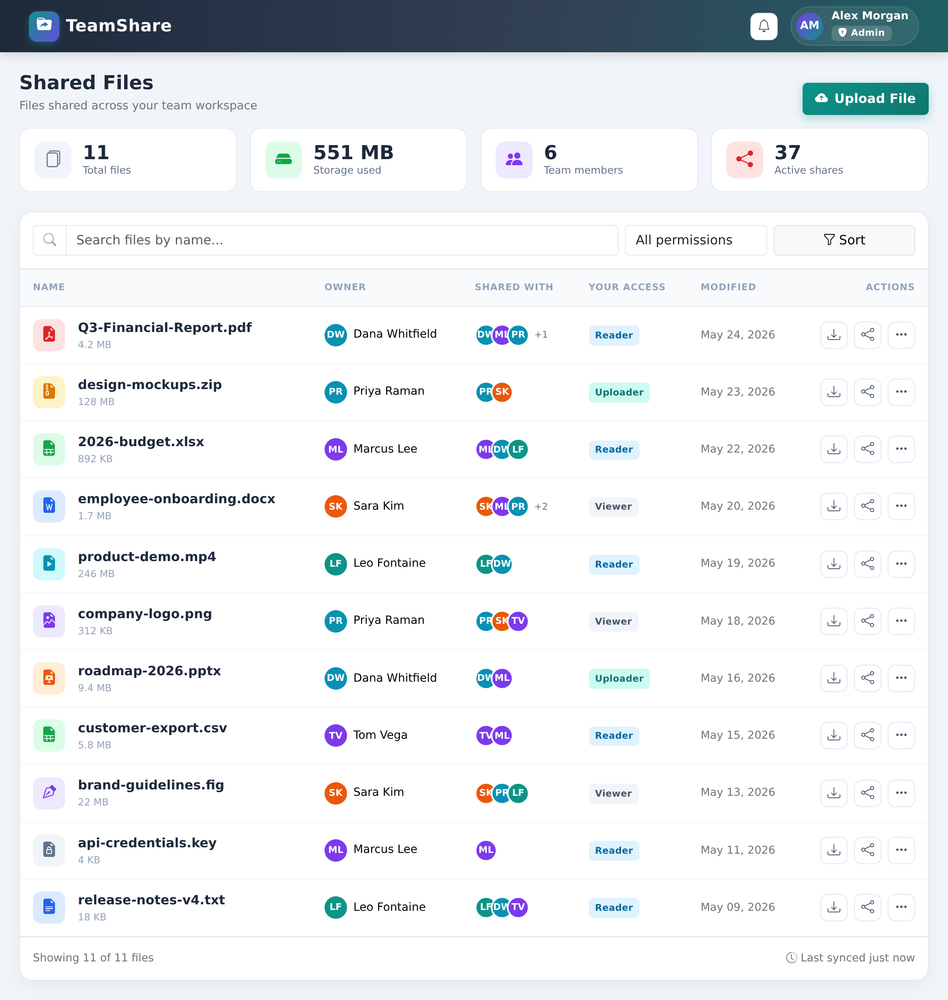

Build a complete web-based file sharing system that runs locally with open-source infrastructure
Project: Portable File-Sharing System
Build a web-based file sharing system with MinIO for S3-compatible object storage, ScyllaDB Alternator for metadata, a local API service for gateway-style routing, function-style backend handlers, and React for the frontend. Includes multiple user roles (Admin, Uploader, Reader, Viewer) with role-based permissions.
mc) for inspecting local bucketsWe have just been hired by a new client who needs a way for their team to share files. They know what frustrates them, not how to build software, so the details are fuzzy. Here is what they have told us so far:
“We want a place where our people can upload files and let others on the team grab them, without emailing huge attachments around. Different people should be able to do different things, some can only look, some can upload, and an admin keeps it all in order. The full details of what we're picturing are written up in the vision.md file.”
vision.md — download it above and skim it before you start. The prompts below read from that file rather than from a description you type in.Make sure vision.md is in your workspace before starting. You kick off the entire workflow by pointing the AI to it — AI-DLC Workflow takes it from there.
Open a new chat and type:
Using AI-DLC, build the system described in vision.md.
AI-DLC Workflow activates and runs Workspace Detection automatically. It will display a welcome message, scan your workspace (including vision.md), set up the aidlc-docs/ directory with state and audit tracking, and proceed to the next stage.
The AI analyzes your request and the vision.md file, then asks clarifying questions about role permissions, file sharing workflows, storage limits, authentication approach, etc.
When the AI presents the questions file: Open it, fill in your [Answer]: tags. Then tell the AI:
I have answered the clarification questions. Please re-read the file and proceed.
The AI may ask follow-up questions. Once resolved, it generates a requirements document and presents an approval gate.
The AI creates user stories based on the vision.md requirements. It runs in two parts: first it plans how to structure the stories, then it generates them with personas and acceptance criteria.
Part 1 — Planning: The AI creates a story generation plan with questions. Open the plan file, fill in your answers, then tell the AI you're done.
Part 2 — Generation: The AI executes the plan step by step, marking checkboxes as it goes.
Go to aidlc-docs/aidlc-state.md, find the first unchecked item, then go to the corresponding plan file and resume from that point. For shorter workshops, you can skip this and continue in the same chat.The AI determines which Construction stages to run and decomposes the system into multiple units that can be built independently. Each unit contains highly cohesive user stories. The units are loosely coupled and ordered so everything is built properly.
Make sure Infrastructure Design is included. If it's marked SKIP:
Add Infrastructure Design to the plan. We need a local Docker Compose deployment using MinIO, ScyllaDB Alternator, a local API service, function-style handlers, and the React frontend.
AI-DLC Workflow designs the detailed component model — all components, attributes, behaviors, and how they interact to implement the user stories. Components should be at a business level, no code yet.
Review the design. If you want changes, tell the AI. When satisfied:
The main build activity. The AI creates a plan, gets your approval, then executes step by step. Code goes in the workspace root, documentation goes in aidlc-docs/.
npm install and npm run build — no dev server, deploy separatelyPart 1 — Planning: The AI creates a code generation plan with numbered, checkboxed steps. Review that it covers all units and components.
Part 2 — Generation: The AI executes each step, checking off tasks in both the plan and the spec task docs.
When complete, review the generated code and respond:
The AI designs the portable local deployment architecture and generates Docker Compose configuration. This covers:
file-share-workshopThe AI will also handle local deployment using Docker Compose:
docker-compose.yml, .env.example, and service-specific Dockerfiles if neededdocker compose up --build and monitor container statuscurl or an API test script to verify upload, list, share, and download flowshttp://localhost:3000, API at http://localhost:8000, MinIO console at http://localhost:9001, and ScyllaDB Alternator at http://localhost:8001.AI-DLC Workflow generates build and test instructions. Check the TODO file for any local setup or validation tasks that need to be executed.
AI-DLC Workflow's Operations phase is a placeholder for future expansion. This is a group discussion about what comes after building.
Discuss as a group:
Now that we've built and deployed our file sharing system, discuss how AI would help with: 1. Monitoring local storage, container health, API performance, and usage 2. Managing object cleanup jobs, file versioning, and backup/restore 3. Adding audit logging for file access and role changes 4. Migrating the same architecture from the local stack to managed cloud services later Please explain how this would work for our specific application.
[Answer]: tags, then tell the AI to re-read.aidlc-state.md. For short workshops, you can often skip this.aidlc-state.md to see where you are at any point.vision.md file you downloaded and read it as if you were the product manager. What did the client leave unclear about who can do what, and what questions would you want answered before writing the stories?You are an expert product manager and are tasked with creating well defined user stories that becomes the contract for developing the system as mentioned in the Task section below. Plan for the work ahead and write your steps in a Markdown file: .aidlc/user_stories_plan.md with checkboxes for each step in the plan. List your Deliverables in the plan. If any step needs my clarification, add a note in the step to get my confirmation. Do not make critical decisions on your own. Upon completing the plan, ask for my review and approval. After my approval, you can go ahead to execute the same plan one step at a time. Once you finish each step, mark the checkboxes as done in the plan. Your Task: Build user stories for the high level requirements as described here in the markdown file vision.md Write the user stories to a .aidlc/user_stories.md file
.aidlc/user_stories.md and review what it produced.
vision.md (Admin, Uploader, Reader, Viewer). Find a capability one role should have that isn't covered by a story.Your Role: You are an experienced software architect. Before you start the task as mentioned below, please do the planning and write your steps in the .aidlc/units_plan.md file with checkboxes against each step in the plan. If any step needs my clarification, please add it to the step to interact with me and get my confirmation. Do not make critical decisions on your own. Once you produce the plan, ask for my review and approval. After my approval, you can go ahead to execute the same plan one step at a time. Once you finish each step, mark the checkboxes as done in the plan. Your Task: Group the user stories in .aidlc/user_stories.md into multiple units that can be built independently. Each unit contains highly cohesive user stories that can be built by a single team. The units are loosely coupled with each other. For each unit, create a spec folder in specs/ with requirements, design, and tasks. The units must be in order so everything is built properly.
specs/ and compare them against .aidlc/user_stories.md.
requirements, design, and tasks — not just an empty folder..aidlc/user_stories.md, then count them across the units. Find any story that got dropped or silently merged.Your Role: You are an experienced software architect and engineer. Before you start the task as mentioned below, please do the planning and write your steps in in a Markdown file named .aidlc/component_model_plan.md with checkboxes against each step in the plan. List your Deliverables in the plan file. If any step needs my clarification, please add it to the step to interact with me and get my confirmation. Do not make critical decisions on your own. Once you produce the plan, ask for my review and approval. After my approval, you can go ahead to execute the same plan one step at a time. Once you finish each step, mark the checkboxes as done in the plan. Your Task: Refer to all the specs/. Design the component model to implement all the user stories. This model shall contain all the components, the attributes, the behaviors and how the components interact to implement the user stories. - The components should be at a business level, do not generate any code yet. - Write the component model into a Markdown file: .aidlc/component_model.md.
.aidlc/component_model.md and review the component model the AI designed — no code has been written yet, only structure.
Your Role: You are an experienced software engineer. Read the specs documents and proceed with building the application, task by task. Before you start building please do the planning and write your steps in the markdown file .aidlc/app_plan.md file with checkboxes against each step in the plan. List your Deliverables in the plan file. If any step needs my clarification, please add it to the step to interact with me and get my confirmation. Do not make critical decisions on your own. Once you produce the plan, ask for my review and approval.
After my approval, execute the same plan and all the specs in specs/ folder, one step at a time. Remember to check off each task as it gets completed, check off the corresponding task in the spec task docs, and if the task involves a back-end, server-side request make sure to test it with a real local HTTP request. NEVER mock up any data except when you need a placeholder. The final app should not have any mock data hardcoded anywhere.
Task: You MUST refer to component design in the .aidlc/component_model.md file and the .aidlc/user_stories.md file.
- Use modern design styling for the UX with Bootstrap CDN: icons, color theme, responsive layout, intuitive visual hierarchy, CSS for hover effects
- Choose a creative professional color theme avoiding default blue (e.g. green, blue, teal, gray, purple, orange, teal etc.)
- Do not run the npm dev server, only use npm-install and npm-run-build. We will deploy the app separately
- Create a TODO file for post-deployment tasks where you keep track of local setup or validation actions that failed and need to be re-executed after a full deploy
- Use real MinIO object storage through an S3-compatible SDK endpoint; do not fake file storage
- Use real ScyllaDB Alternator tables for metadata and permissions; do not fake metadata persistence
- Configure local endpoints, access keys, table names, bucket names, and ports through environment variables and .env.example
- Organize backend logic as function-style handlers that can run locally through the API service and could later be adapted to serverless functions
- Create integration tests that write objects to MinIO and metadata to ScyllaDB Alternator
- Read container logs immediately after first local deploy
- Also implement this additional feature: ✏️ TODO: describe your additional feature hereYour Role: You are an experienced platform engineer. Before you start the task as mentioned below, please do the planning and write your steps in the markdown file .aidlc/deployment_plan.md file with checkboxes against each step in the plan. List your Deliverables in the plan file. If any step needs my clarification, please add it to the step to interact with me and get my confirmation. Do not make critical decisions on your own. Once you produce the plan, ask for my review and approval. After my approval, you can go ahead to execute the same plan one step at a time. Once you finish each step, mark the checkboxes as done in the plan. Task: Use the following steps to deploy the application code generated in the backend and react-app folders as a portable local developer stack. Do not require AWS services, AWS credentials, AWS CLI, SAM, CloudFormation, API Gateway, Lambda, or CloudFront. Step 1: Create local infrastructure as code Create a docker-compose.yml file that defines: - A MinIO service for S3-compatible object storage, with a persistent named volume and console exposed on localhost:9001 - A ScyllaDB Alternator service for metadata and permissions, with a persistent named volume and endpoint exposed on localhost:8001 - A backend API service exposed on localhost:8000 that provides gateway-style routes for auth, users, uploads, downloads, sharing, and admin workflows - A frontend service exposed on localhost:3000 that serves the built React application - Health checks, service dependencies, local network configuration, and named volumes Create a .env.example file with all local endpoint URLs, table names, bucket names, access keys, and ports. Step 2: Create initialization scripts - Create repeatable scripts to initialize the MinIO bucket, access policy needed by the app, and ScyllaDB Alternator tables - Make initialization idempotent so rerunning it does not corrupt existing local data - Document how to reset local volumes when a clean environment is needed Step 3: Build and run the local stack - Build the React application - Run docker compose up --build - Monitor container status with docker compose ps - Read container logs for the API, MinIO, ScyllaDB Alternator, and frontend services Step 4: Verify the deployed application - curl the backend health endpoint at http://localhost:8000 - Verify the frontend loads at http://localhost:3000 - Verify the MinIO console is reachable at http://localhost:9001 - Verify ScyllaDB Alternator is reachable at http://localhost:8001 - Run an integration test or script that uploads a real file to MinIO, writes metadata to ScyllaDB Alternator, lists the file, creates a share, and downloads the file
Now that we've built and deployed our file sharing system, let's discuss the Operations Phase. Based on what we've created, how would AI help with: 1. Monitoring local storage, container health, API performance, and usage 2. Managing object cleanup jobs, file versioning, and backup/restore 3. Adding audit logging for file access and role changes 4. Migrating the same architecture from the local stack to managed cloud services later Please explain how this would work for our specific application.
Rather than copying fixed commands, ask the AI to generate a test plan for the system it actually built — it knows your real routes, containers, and any feature you added. Copy this prompt:
Generate a short manual test plan for the file sharing system we just built. Base it on the actual routes, containers, and files in the project, not on assumptions. Include two parts: 1. Browser/UI walkthrough: step-by-step actions to confirm each role works as intended — act as an Uploader and upload a file, share it, then act as a Reader and download it, and confirm a Viewer cannot do something they shouldn't be able to. Tell me which URL to open. 2. Command-line checks: the exact commands to confirm the stack is healthy — curl the API health endpoint and the key routes with example data, open the MinIO console to confirm the uploaded object exists, and check that the file's metadata was written to ScyllaDB Alternator. Also include the commands to bring the stack up first. Keep it copy-paste ready.
Earlier, one of our engineers followed the exact same steps you just did and created this prototype. In what ways are the two apps similar and different? Where could the differences have crept in?
